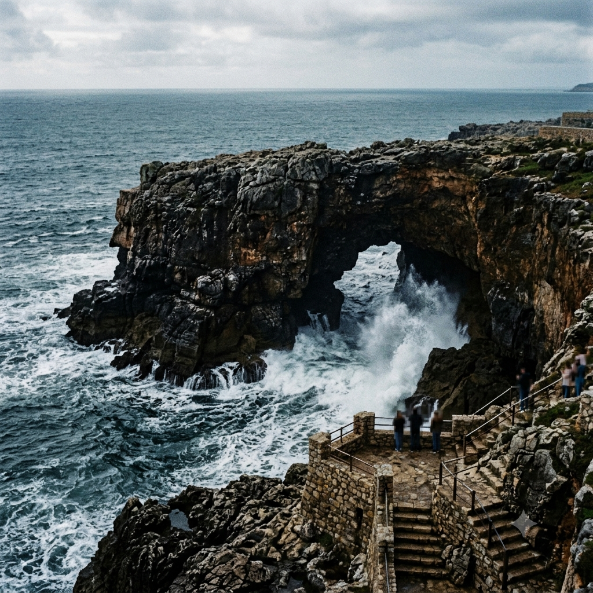

"Fotografia da formação rochosa Boca do Inferno em Cascais, Portugal. As ondas do oceano Atlântico batem com força contra as falésias de rocha escura, com água esbranquiçada e agitada fluindo através do arco natural."">Meu primeiro post
Por: Marcelo Paludetto
Boas-vindas ao meu novo blog! Aqui vou compartilhar dicas de programação e curiosidades da área de tecnologia.